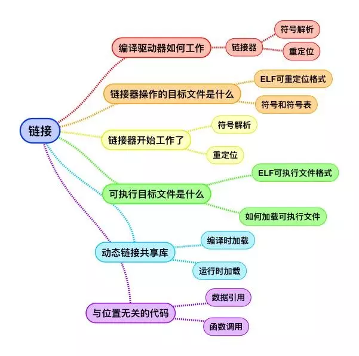
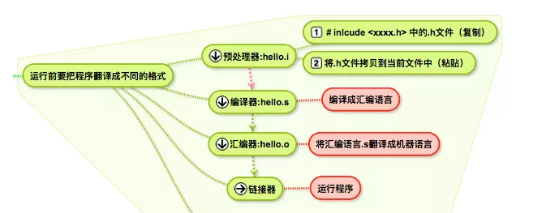
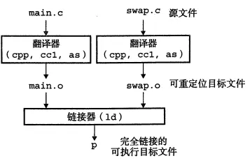
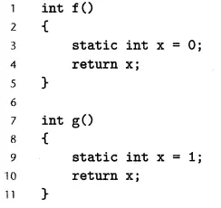
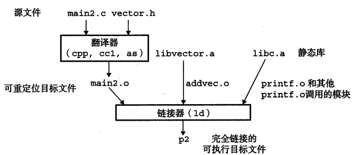
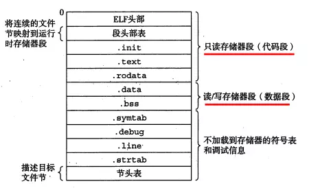
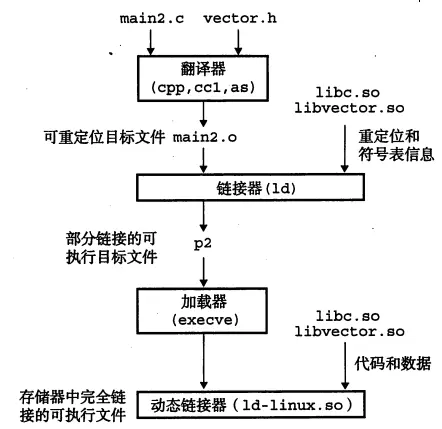

整体看本章（第七章讲了啥）

链接是将各种不同文件的代码和数据部分收集（符号解析和重定位）起来并组合成一个单一文件的过程。
目标文件三种形式：
1、可重定位目标文件：包含二进制代码和数据，其形式可以在编译时与其他可重定位目标文件合并起来，创建一个可执行目标文件。
2、可执行目标文件：包含二进制代码和数据，其形式可以直接拷贝到存储器并执行。
3、共享目标文件：一种特殊类型的可重定位目标文件，可以在加载或运行时被动态地加载到存储器并链接。
看一下GCC做了哪些事情

细讲最后一步链接器（ld）做了啥

1、符号解析。目标文件定义和引用符号，符号解析的目的是将每个符号引用和一个符号定义联系起来；
2、重定位：把每个符号定义与一个存储器位置联系起来，然后修改对这些符号的引用，是的他们指向这个存储器位置，从而实现重定位。
链接器操作的目标文件
目标文件一般是由汇编器生成的.o后缀的文件，大概有三种不同的形式：可重定位目标文件；可执行目标文件和共享目标文件。我们接下来讨论的目标文件是基于Unix系统的ELF格式（Exxcutable and Linkable Format），这同Windows系统上的PE（Portable Executable）文件格式在基本概念上其实是相似的：
一个典型的ELF可重定位目标文件的格式：
.text：已编译程序的机器码；.rodata：只读数据（read-only-data）；
.data：已初始化的全局C变量；.bss：未初始化的全局C变量（better save space）;
.symtab：一个符号表（定义和引用的函数和全局变量信息）；
.rel.text：代码重定位条目， 一个.text节中位置的列表，需要修改的位置;
.rel.data: 被模块引用或定义的任何全局变量的重定位信息；
.debug：一个调试符号表； .line：原始C源程序中的行号和.text机器指令的映射；
.strtab: 一个字符串表ld任务一 符号解析（符号和符号表）
保存于.symtab中的是一个符号表，其是定义和引用函数和全局变量的信息。有三种不同类型的符号：全局符号（不带static），外部引用（external）和本地符号。如果是带有static符号的就会在.data和.bss中为每个定义分配空间，并在.symtab中创建一个唯一名字的本地符号。比如：
中有两个static定义的x变量，其会在.data中分配空间，并在.symtab中创建两个，x.1表示f函数的定义和x.2表示函数g的定义。（注：使用static可以保护你自己的变量和函数）

符号解析任务简单的说，就是链接器使得所有模块中的每个符号只有一个定义。链接器在这一个阶段的主要任务就是把代码中的每个符号引用和确定的一个符号定义联系起来。对于本地符号，这个任务相对来说是简单的。复杂的就是全局符号，编译器（cc1）遇到不是在当前模块中定义的符号时，会假设该符号的定义在其他模块中，生成一个链接器符号交给链接器处理。如果链接器ld在所有的模块中都找不到定义的话就会抛出异常。
如何链接和解析静态库
像printf等一些常用的函数，都是在libc.a静态库中，静态库以一种存档的特殊文件（.a）格式，将可以定位的目标文件集合成一个.a文件。

ld任务二 重定位
完成了符号解析以后，链接器的第二个任务就是合并输入模块，并为每个符号分配运行时的地址。
重定位节和符号定义：在这一步中，链接器将所有模块中的.data节合并成一个文件的.data节，运行时存储器的地址也会赋给新的聚合节。
然后就是，重定位节中的符号引用：链接器修改代码节和数据节中对每个符号的引用，使得他们指向正确的运行时地址。这一步要用到重定位条目这一数据结构，我们来描述这个过程：
可执行目标文件格式
通过前面知识的学习，我们了解到链接器主要完成了两个工作，符号解析和重新定义。将数据和代码合并成为一个可执行的文件，接下来我们看看这个可执行文件的格式是什么，以及如何加载到存储器中开始运行的过程。

ELF头部：描述文件总体格式，标注出程序入口点；.init：定义了初始化函数;
段头部表：可执行文件是一个连续的片，段头部表中描述了这种映射关系；动态链接共享库
1、 编译时加载

静态库需要定期的维护和更新，调用的代码还会拷贝到每个运行的进程中去，这是对存储器系统资源的极大浪费。为了弥补这样的缺陷，我们发明了共享库。共享库的一个主要目的就是允许多个正在运行的进程共享存储器中相同的库代码，节约资源。以(.so)结尾的文件，在运行时被加载到任意存储器地址，并和存储器中的程序链接起来，以后的进程要用到这个库就从这个固定的位置开始访问。这一过程的管理交由动态链接器程序来执行。
2、运行时加载共享库
微软的windows程序开发人员提供共享库来更新软件，通常要求下载最新的dll库，然后在程序下一次执行的时候会自动链接和加载更新后的共享库。我们创建dll.c文件，运行时加载libvector.so